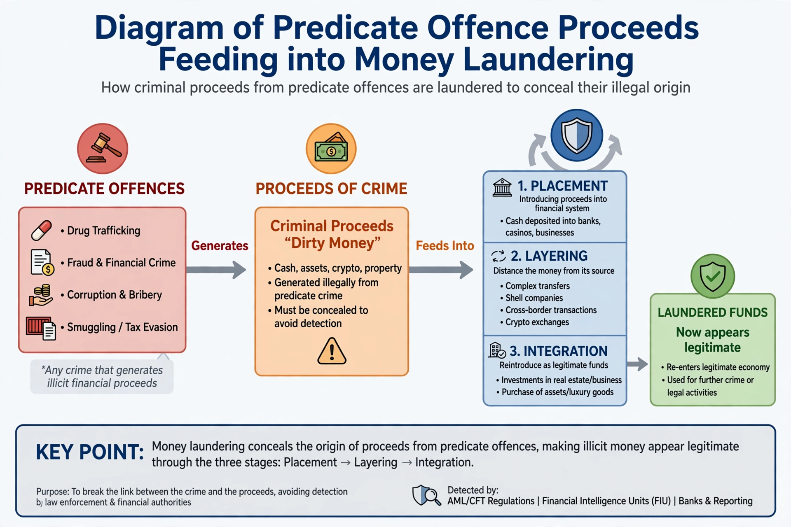

Predicate crime
From Wikipedia, the free encyclopedia
A predicate crime (or predicate offence) is an underlying criminal act that is a component of a larger offence. The term is most prominent in the law of money laundering and racketeering: money laundering consists of concealing or disguising the proceeds of some earlier offence, and it is that earlier offence which is the predicate crime or predicate offence.

In money laundering law
To convict a person of money laundering, the prosecution generally must show that the property involved derived from criminal conduct, although it need not always prove the defendant's knowledge of the specific predicate offence, nor obtain a conviction for it. The Financial Action Task Force Recommendations require countries to apply the crime of money laundering to all serious offences, using one of several approaches: listing designated categories of offences, applying a threshold based on the maximum penalty, or a combination. Designated categories typically include drug trafficking, fraud, corruption, organized crime, terrorism, tax crimes and environmental crime.
Legal systems differ in scope. In the United States, federal money laundering statutes (18 U.S.C. §§ 1956–1957) define the predicate — a "specified unlawful activity" — through a long list of offences, and foreign offences can qualify in certain circumstances. The United Kingdom's Proceeds of Crime Act 2002 adopts an "all crimes" approach, under which any criminal conduct can generate "criminal property." The European Union's anti-money-laundering directives list harmonized predicate offences, expanded over successive directives to include cybercrime and environmental crime.
In racketeering law
Under the U.S. Racketeer Influenced and Corrupt Organizations Act (RICO), a "pattern of racketeering activity" requires at least two acts drawn from a statutory list of predicate crimes, which includes murder, kidnapping, arson, robbery, bribery, extortion, drug dealing, and various fraud offences, committed within ten years of one another.
Dual criminality and foreign predicates
Where the predicate conduct occurred abroad, questions arise whether it must also be criminal in the prosecuting jurisdiction ("dual criminality"). Modern conventions, including the UN Convention against Transnational Organized Crime (Palermo Convention, 2000), encourage broad coverage of foreign predicates, at least where the conduct would be criminal in both states.
See also
- Financial Action Task Force
- Corporate crime
- Money laundering
This article is a recreation from memory in the style of Wikipedia.